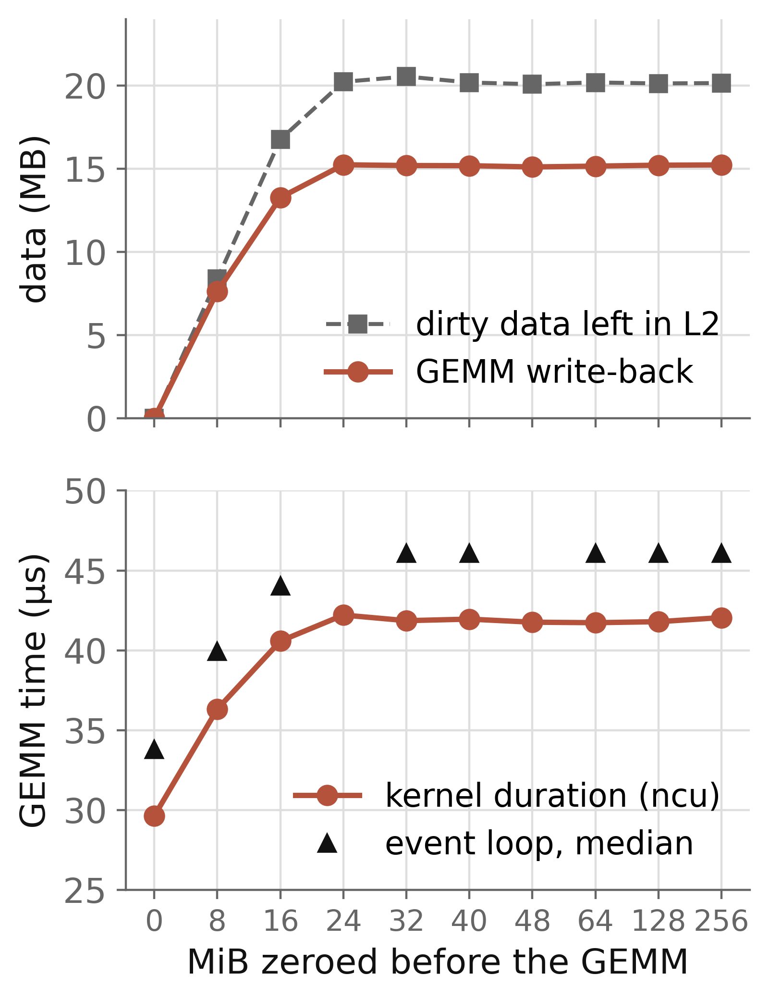
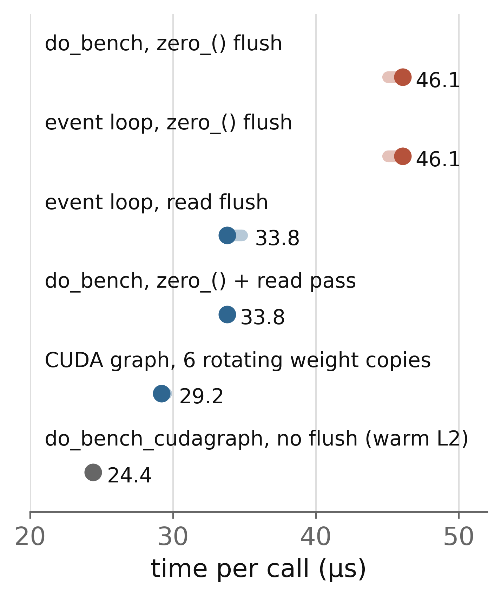
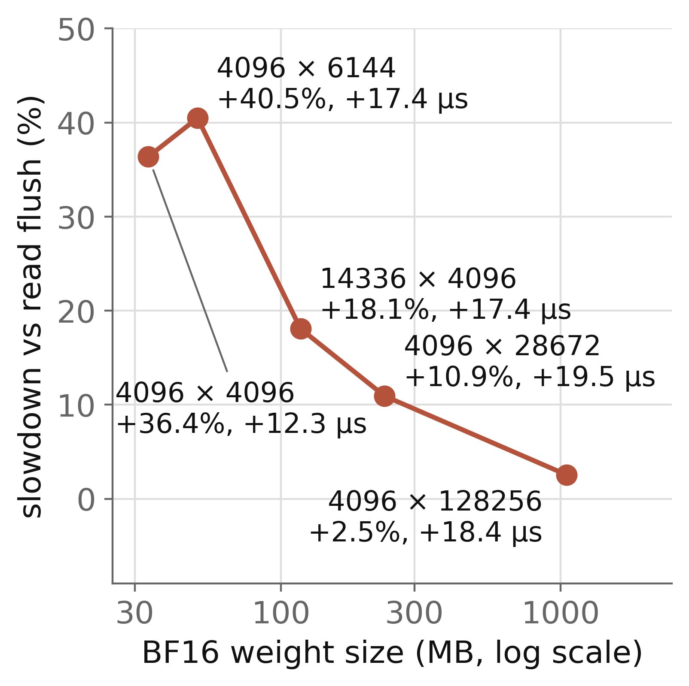

Triton’s do_bench L2 Flush Adds 12–20 µs to One-Row BF16 GEMMs on an A100
If you time memory-bound kernels that read less than a few hundred MB with triton.testing.do_bench or PyTorch Inductor, the number includes write-back of the flush buffer. Here that is 11–41% at 34–235 MB and 2.5% at 1.05 GB. TileLang and nvbench use the same kind of flush; I read their code but did not run them. A read pass after the flush removes the cost (section 5).
1. The observation
In a decode step, a small-M GEMM multiplies a few activation rows by a large weight. Here M, the number of rows, is 1. The time to read the weight from HBM, the GPU’s DRAM, sets the kernel time.
Take F.linear with one BF16 input row and a 4096 × 4096 BF16 weight on an A100 PCIe 40GB. The weight is 33.6 MB. triton.testing.do_bench reports 46.1 µs, which is 0.73 TB/s. This number suggests that cuBLAS reads HBM slowly at small M.
In Nsight Compute with a clean L2, the same kernel takes 29.6 µs. In a CUDA graph that cycles through six copies of the weight, it takes 29.2 µs per call. In both cases each call reads the full weight from HBM. Most of the extra time in the 46.1 µs comes from the L2 state that do_bench sets before each timed call.
2. The mechanism
A benchmark of a memory-bound kernel must set the cache state before each call. If the weight stays in L2 from the previous call, the kernel looks too fast. So do_bench clears L2 before each timed call. The NVIDIA backend uses these two functions [1]:
def get_empty_cache_for_benchmark(self):
cache_size = 256 * 1024 * 1024
return torch.empty(int(cache_size // 4),
dtype=torch.int, device='cuda')
def clear_cache(self, cache):
cache.zero_()I call this the zero_() flush. The kernel that writes the zeros is the fill kernel. A write puts a line into L2 and marks it dirty. The line goes to HBM only when something evicts it. After the fill kernel, L2 holds no data of the timed kernel. It does hold many dirty lines of the zero buffer.
The timed kernel then reads its weight. Each new line evicts an old line. Each dirty line that it evicts must go to HBM first. So the timed kernel reads its own data and also writes the previous kernel’s data. Both share the HBM bandwidth, and the timer charges both to the timed kernel.
A read flush reads a large buffer and leaves only clean lines in L2. L2 drops a clean line on eviction and writes nothing. Nsight Compute uses a third method. With --cache-control all, it clears L2 with a driver operation where the platform supports it [2].
This mechanism is already known. Two projects on AMD GPUs reported it. AMD-AGI/GEAK PR #481 (merged 2026-09-22) changed to a read flush [8]. ROCm/hip-ep PR #1238 (merged 2026-10-15) changed to weight rotation [9]. TileLang PR #3534, open since 2026-10-15, changes TileLang’s flush to a read [10]. The forum question in [2] also describes dirty lines from a write flush.
This post adds four things for NVIDIA hardware. It measures the write-back bytes on an A100. It measures how the write-back grows with the size of the zero_() flush. It shows a case where the flush changes which kernel looks faster. It checks which common tools still flush with a write.
3. Evidence
Setup. All measurements in sections 1–5 and 7 ran on one A100-PCIE-40GB, in one job. One Nsight Compute check in section 4 ran later on another A100 of the same server. Software: PyTorch 2.13.0 (CUDA 13.0 build), Triton 3.7.1, Nsight Compute 2025.1.1. Buffer sizes are in MiB. Byte counts from Nsight Compute are in MB (106 bytes). I wrote predictions before each run. Section 6 lists the ones that failed.
Write-back bytes in Nsight Compute
I ran the GEMM under Nsight Compute with three options. --cache-control none keeps the profiler away from the cache. --clock-control none leaves the GPU clocks as they are. --replay-mode application takes each metric from a real pass of the whole program.
Before each GEMM, the program read a 256 MiB buffer, which leaves L2 clean. Then it zeroed a buffer of X MiB. Then it ran the GEMM. I repeated each case three times and report the median.
With X = 0, the GEMM reads 33.56 MB, writes 0.02 MB and takes 29.63 µs. With X = 256, it reads the same 33.56 MB, writes 15.24 MB and takes 42.05 µs. Its own output is 8 KB, so the 15 MB is write-back of the zero buffer. The kernel takes 42% longer.
The extra time matches the extra bytes. The clean kernel moves 33.56 MB at 1.13 TB/s. The dirty kernel moves 48.80 MB at 1.16 TB/s.
Write-back versus flush size
If the write-back causes the slowdown, the write-back and the time must both grow with X. Both must also stop growing at the same X. Figure 1 shows the result.


A zero_() flush of 8 MiB leaves all 8.4 MB dirty, and the GEMM writes back 7.6 MB. At 16 MiB, the GEMM writes back 13.3 MB. From 24 MiB up, the fill kernel starts to write its own data to HBM. The GEMM write-back then stays at 15.1–15.3 MB. The kernel duration follows it: 29.6, 36.3, 40.6, then 41.7–42.2 µs. The slope is about 0.8 µs per MB of write-back.
The dirty data stops at about 20 MB. In Figure 1, the square markers show 20.0–20.6 MB. They are computed as the bytes zeroed minus the fill kernel’s own HBM writes. Two direct measurements give about 1 MB less. A read pass after a 256 MiB zero_() flush writes back 19.1–19.3 MB. A GEMM that reads 235 MB or 1.05 GB writes back 19.3–19.4 MB. The 4096 × 4096 GEMM reads only 33.6 MB and evicts about 15 MB of it.
I do not know why the limit is about half of the 40 MB L2. One hypothesis follows. Clean data has a similar limit. If L2 holds only about 20 MB of any data, a second read of a larger buffer must miss. A buffer of 24 MiB that is read twice misses 1.0 MB on the second read. A buffer of 28 MiB misses 8.3 MB. The A100 L2 has two partitions, and each partition caches data for the SMs connected to it [11]. If both partitions keep a copy of data that all SMs touch, the usable capacity is about 20 MB. I did not verify this.
Six timing methods in one process
An event loop is a Python loop that records a CUDA event before and after each call. I compared six methods in one process, in three interleaved rounds. Each process starts with one second of warm-up, so the SM clock is at 1410 MHz. I repeated this in five independent processes. Figure 2 gives the median and interquartile range (IQR) of all samples.


do_benchand my event loop with the same zero_() flush both give 46.08 µs. The flush causes the slowdown. The rest ofdo_benchdoes not change it.- An event loop with a read flush gives 33.79 µs. So does
do_benchwith a read pass after the zero_() flush. The read pass writes the dirty lines back before the timer starts. - A CUDA graph that cycles through six weight copies (201 MB, about five times the L2 size) gives 29.18 µs per call. In Nsight Compute, each of these GEMMs reads the full 33.56 MB from HBM, so the weight is cold.
do_bench_cudagraphdoes not flush L2. It gives 24.40 µs, 4.8 µs less than the cold-weight graph, because part of the weight stays in L2.
For this shape, the event-loop medians are about 4 µs above the Nsight Compute kernel duration. A second kernel does not cause this gap. In torch.profiler, F.linear with one row launches exactly one GEMM kernel per call for this shape. For the 4096 × 28672 shape, cuBLAS also launches a memset per call. For the four larger shapes, the event loop with a read flush and the rotating-weight graph differ by −1.0 to +2.6 µs. I did not find the cause of the 4 µs. Across the five processes, the per-process medians of each method differ by one timer step at most.
4. Who is affected
The write-back is at most 19–20 MB on this card. A kernel that moves a similar amount of data pays a large relative cost. Figure 3 shows the slowdown for five weight shapes from Llama 3.1 8B, each with one input row. The shapes are the output projection, fused QKV, down projection, fused gate and up projection, and the LM head.


do_bench divided by median time with a read-flush event loop, for BF16 GEMMs with one input row. The percentages use the event-loop median as the base. Nsight Compute kernel durations give 42%, 9.6% and 2.2% for the 34 MB, 235 MB and 1.05 GB shapes. Labels give the shape K × N, the relative slowdown and the absolute difference. 5 processes. Author’s measurements.The absolute cost is 12.3–19.5 µs. The relative cost falls from 36–41% for weights of 34–50 MB to 18.1% at 117 MB, 10.9% at 235 MB and 2.5% at 1.05 GB. Nsight Compute gives the same trend: 42%, 9.6% and 2.2% for the 34 MB, 235 MB and 1.05 GB weights. I did not measure compute-bound shapes.
The flush can change which kernel looks faster
The cost depends on how much the timed kernel reads. A kernel that reads less evicts fewer dirty lines and pays less. So a zero_() flush can favor a kernel that reads fewer bytes, or one that uses less of the HBM bandwidth.
I tested this with two kernels for the same layer shape, 4096 × 4096 with one input row. The first is cuBLAS with a BF16 weight, which reads 33.6 MB. The second is a Triton kernel with an INT8 weight and one scale per row, which reads 16.8 MB. I timed 96 block-size configurations of the Triton kernel, in three processes. I checked each Triton configuration against a dequantized reference (maximum relative error below 2%). Each candidate ran with both flushes in the same event loop.
Table 1. Event-loop medians (µs) under each flush. The INT8 rows are two of the 96 Triton configurations. Process 1 of 3; the other two agree within one timer step.
| Kernel | Read flush | zero_() flush |
|---|---|---|
| cuBLAS, BF16 weight | 33.8 | 46.1 |
| Triton INT8, fastest config | 20.5 | 26.6 |
| Triton INT8, BLOCK_N 4, BLOCK_K 128, 2 warps | 38.9 | 43.0 |
With the read flush, the second INT8 configuration is 15% slower than cuBLAS. With the zero_() flush, it is 7% faster. 9 of the 96 configurations change rank in this way by at least 2 µs on each side, in all three processes. 5 more change rank by one timer step (1.02 µs) on one side. No configuration changes rank in the other direction. With the read flush, 55–57 configurations are faster than cuBLAS. With the zero_() flush, 71 are faster.
Nsight Compute on another A100 of the same server confirms the flip for the configuration in Table 1. Its kernel takes 35.7 µs against 30.3 µs for cuBLAS after a read flush. After a zero_() flush, it takes 39.2 µs against 41.8 µs. Here cuBLAS writes back 15.6 MB and the INT8 kernel writes back 6.7 MB. Per MB of write-back, cuBLAS pays 0.74 µs and the fastest INT8 configuration 0.84 µs. The Table 1 configuration pays only 0.53 µs per MB, probably because it uses less of the HBM bandwidth. The fastest INT8 configuration looks 1.65 times faster than cuBLAS with the read flush. With the zero_() flush, it looks 1.73–1.77 times faster across the three processes. GEAK saw the same direction on an AMD MI355X. A decode speedup of 1.12 with a read flush became 1.40 with a write flush [8].
Which tools flush with a write
I read the benchmark code of several tools on 2026-10-30. Table 2 gives the result.
Table 2. How benchmark helpers prepare L2 before a timed call. “Write” means the flush leaves dirty lines. The Proton functions exist from Triton v3.8.0.
| Tool | Type | Flush before each call |
|---|---|---|
Triton do_bench | write | zero_(), 256 MiB |
Triton do_bench_proton, do_bench_cudagraph_proton | write | zero_(), 256 MiB |
Triton do_bench_cudagraph | warm L2 | none |
| PyTorch Inductor default benchmarker | write | zero_(), L2 size |
TileLang do_bench | write | zero_(), 256 MiB |
ThunderKittens benchmark_l2_clear | write | random_(), 128 MiB |
| NVIDIA nvbench | write | cudaMemsetAsync, L2 size |
| GPU MODE reference-kernels | write | torch.randn, 4 GiB |
torch.utils.benchmark.Timer | warm L2 | none |
Nsight Compute, --cache-control all | clean here | driver operation; a write kernel on vGPU |
- Triton. All releases from v2.0.0 to v3.9.0 (2026-10-27) and main at efd1112 use the zero_() flush. The buffer is 256e6 bytes before v3.2 and 256 MiB from v3.2 [3]. The Proton functions came in PR #10149 and first shipped in v3.8.0. They time only the kernel and still call the same flush [12]. I read this code and did not run it.
- Timing only the kernel does not remove the cost. The write-back happens inside the timed kernel. The Nsight Compute kernel durations in Figure 1 show it: 29.6 µs clean, 42.1 µs after the zero_() flush.
- PyTorch Inductor. In 2.13.0 and on main, the default benchmarker is
InductorBenchmarker, which autotuning calls [4]. Each call returns the minimum of its samples. On the 4096 × 4096 GEMM, five calls returned 45.1–49.2 µs. A read-flush event loop in the same process had a minimum of 32.8 µs. I did not test whether max-autotune, the mode that benchmarks candidate configurations, picks a different one. - Nsight Compute. On this bare-metal A100, I profiled the GEMM after a 256 MiB zero_() flush with
--cache-control all. The first GEMM wrote 2.1 MB; each later GEMM wrote 3.2 KB. The reply in [2] states that on vGPU, the profiler clears L2 with a write kernel. - TileLang [5], ThunderKittens [6], nvbench [7] and GPU MODE [13]: I read the code and did not run it. In ThunderKittens, the helper is in the parallel kernels only. GPU MODE calls the flush before the start event.
A dirty L2 also occurs in real workloads. The forum question in [2] notes that a kernel often starts with dirty lines from the previous kernel. A write flush measures one specific state: the state after a large write. A report that a small kernel reaches only half of the HBM bandwidth can come entirely from this flush.
5. How to measure instead
Choose the cache state on purpose and report it. Here, cold means that the weight is not in L2. Clean means that L2 holds no dirty lines. For a cold, clean L2, add a read pass after the zero_() flush, or use only a read flush. The read pass runs outside the timed region and does the write-back there.
Both changes gave 33.79 µs for the 4096 × 4096 GEMM, equal to the read-flush event loop. In Nsight Compute, a zero_() flush followed by a read pass gives a GEMM of 30.3 µs with 0.08 MB of write-back. For Triton 3.3 and later, the driver object has a clear_cache method, and the change is short:
import torch, triton
import torch.nn.functional as F
W = torch.randn(4096, 4096, device="cuda", dtype=torch.bfloat16)
x = torch.randn(1, 4096, device="cuda", dtype=torch.bfloat16)
fn = lambda: F.linear(x, W)
# warm-up: the GPU leaves its idle clock
triton.testing.do_bench(fn, rep=1000)
t_zero = triton.testing.do_bench(fn, return_mode="median")
drv = triton.runtime.driver.active
orig = drv.clear_cache
def clear_then_read(cache):
cache.zero_()
# read pass: dirty lines go to HBM here, untimed
cache.view(torch.float32).sum()
drv.clear_cache = clear_then_read
try:
t_clean = triton.testing.do_bench(fn, return_mode="median")
finally:
drv.clear_cache = orig
print(f"zero_: {t_zero*1e3:.1f} us "
f"zero_ + read: {t_clean*1e3:.1f} us")The view(torch.float32) is necessary. A .sum() on the int32 buffer first converts it to int64. That conversion writes a 512 MiB temporary and leaves dirty lines again.
Three limits apply to this fix.
- I tested it only on an A100. On AMD GPUs with an Infinity Cache, a read flush may leave the weight in cache. ROCm/hip-ep measured this on gfx1151 and used weight rotation [9].
- A
.sum()can launch two kernels: one partial sum per block, then a final sum. A per-kernel timer such as CUPTI or Proton can then count the gap between them. TileLang PR #3534 hit this problem [10]. In my runs, the 256 MiB fp32.sum()launched one kernel. - The read pass adds about 0.2 ms per call to the benchmark’s wall time.
For the steady state of a decode loop, the rotating-weight CUDA graph is a closer model. To check any method, run the kernel under Nsight Compute with --cache-control none and read dram__bytes_write.sum. If a memory-bound kernel writes much more than its own output, the extra bytes are write-back of earlier data.
6. Limitations
- One GPU model, the A100 PCIe 40GB. Other GPUs have different L2 sizes and policies. I did not test H100 or B200.
- The BF16 measurements use one kernel: cuBLAS through
F.linear, with one input row. - The cause of the 19–20 MB limit is a hypothesis.
- I did not measure how many dirty lines a real decode step leaves before each linear layer.
- Three predictions failed. The large weights wrote back 19.3 MB, not 13–17 MB. The 4096 × 6144 ratio, 1.405, was just above 1.25–1.40. The L2 hit rate of the rotated GEMMs was 25%, not below 15%. A plain read of cold data also shows 21–25%, so this counter does not show a cold weight; the HBM read bytes do.
- On the 1.05 GB shape, the SM clock fell to 1320–1350 MHz near the 250 W limit. On the other shapes, it stayed at 1365 MHz or higher. The methods are interleaved, so clock changes affect all of them similarly.
7. Reproducing the numbers
The snippet in section 5 runs in a few seconds. I ran it three times as printed. It gave 53.2 and 33.8 µs, 50.2 and 37.9 µs, and 48.1 and 33.8 µs. The absolute numbers move with the GPU clock, and the gap of 12–20 µs stays. The warm-up line is necessary. Without it, an earlier job on the same GPU slot started at an SM clock of 795 MHz.
To see the write-back bytes, run this program under Nsight Compute. It runs each L2 state twice, because the first profiled GEMM is about 2 µs slower.
# dirty_l2.py
import torch, torch.nn.functional as F
MiB = 1 << 20
dev, bf16 = "cuda", torch.bfloat16
rbuf = torch.ones(256 * MiB // 4, device=dev)
zbuf = torch.empty(256 * MiB // 4, dtype=torch.int32,
device=dev)
W = torch.randn(4096, 4096, device=dev, dtype=bf16)
x = torch.randn(1, 4096, device=dev, dtype=bf16)
F.linear(x, W); torch.cuda.synchronize()
torch.cuda.profiler.start()
for _ in range(2): # clean L2
rbuf.sum(); F.linear(x, W)
for _ in range(2): # dirty L2
zbuf.zero_(); F.linear(x, W)
for _ in range(2): # read pass
zbuf.zero_(); rbuf.sum(); F.linear(x, W)
torch.cuda.synchronize()
torch.cuda.profiler.stop()ncu --cache-control none --clock-control none \
--replay-mode application --profile-from-start off \
--metrics gpu__time_duration.sum,\
dram__bytes_read.sum,dram__bytes_write.sum \
python dirty_l2.pyI ran it three times on another A100 of the same server, with the same --clock-control none as in section 3. The first clean GEMM took 32.6–32.8 µs and wrote 0.12 MB. For the second GEMM of each pair, the medians are 30.8 µs (clean), 43.1 µs (dirty) and 30.1 µs (read pass). They wrote 0.01, 15.4–15.6 and 0.04 MB or less, and each read 33.6 MB. These values are within about 1 µs of section 3. If you have an H100 or a B200, these three lines show whether the effect is larger there.
- Triton, third_party/nvidia/backend/driver.py, lines 409–419, commit efd1112, 2026-10-29.
- NVIDIA Developer Forums, How does --cache-control all clear the L2 cache? Question 2026-10-03; reply by forum user felix_dt, 2026-10-29.
- Triton, python/triton/testing.py, commit efd1112. Tags v2.0.0 to v3.9.0 checked.
- PyTorch, torch/_inductor/runtime/benchmarking.py and torch/_inductor/config.py, commit 0df59aa, 2026-10-29.
- TileLang, tilelang/profiler/torch_bench.py and bench.py, commit da53da9, 2026-10-29.
- ThunderKittens, kernels/parallel/common.py, commit 67845f5, 2026-09-12.
- NVIDIA nvbench, nvbench/detail/l2flush.cuh, commit a7fe2f3, 2026-10-12.
- AMD-AGI/GEAK, PR #481, “evict cache with a read, not a 512MB write”, merged 2026-09-22.
- ROCm/hip-ep, PR #1238, “time kernel unit tests on cold caches”, merged 2026-10-15.
- tile-ai/tilelang, PR #3534, “Flush L2 cache with read-only operations”, open since 2026-10-15.
- NVIDIA, NVIDIA A100 Tensor Core GPU Architecture, section “A100 L2 Cache”, page 35.
- Triton, PR #10149,
do_bench_protonanddo_bench_cudagraph_proton, merged 2026-04-28. - GPU MODE, problems/nvidia/utils.py,
clear_l2_cache, commit f3295bb, 2026-09-18.